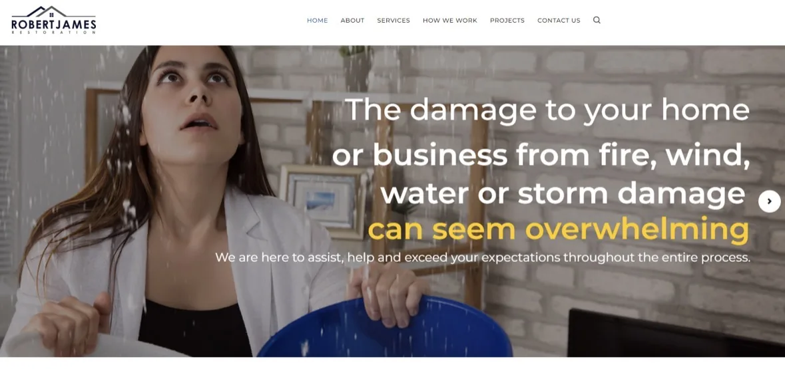

Strategy
When marketing is busy but the priorities are not clear.
- Positioning
- Messaging
- Go-to-market
- Demand generation
I connect marketing decisions to the business strategy.
My expertise sits across marketing strategy, execution, operations, and team development. That means I can zoom out to identify the real problem, then get close enough to help fix it.
When marketing is busy but the priorities are not clear.
I connect marketing decisions to the business strategy.
When the website or the brand has fallen behind the business.
I build experiences that make it easier to say yes.
When disconnected tools and unclear ownership are costing time.
Better systems create better marketing.
When a team needs more than a strategy document to move.
Recommendations only matter if people can actually execute them.
AI should give teams more time to think strategically, not just more ways to produce.
Tools are useful, but they are rarely the strategy.
HubSpot, Salesforce, Constant Contact
Google Analytics, Google Ads, LinkedIn Ads, Meta Ads, SEMrush
WordPress, Elementor, Canva, Storylane
Notion, Wrike, Microsoft Teams
PandaDoc, Calendly, Microsoft Forms
ChatGPT, Claude, and custom workflow tools

The work spans SaaS, financial services, home services, education, and technology.
That’s often where the work starts. We can look at what’s happening in the business, identify the real constraint, and figure out what would make the biggest difference.